本轮只做 R6 报告里的问题修复，不改包名、版号、订阅源与第三方脚本。所有截图与断言来自同一个最终 APK。
| 编号 | 级别 | 页面 | 修复结果 |
|---|---|---|---|
| R6-01 | P1 | 首页 / 分类 | 分类点击立即切换选中态；失败落到错误态（重试 + 返回），不再“点了没反应” |
| R6-02 | P1 | 影片详情 | 顶栏与返回入口移出加载替身；加载/错误/空态都能看到返回 |
| R6-03 | P2 | 设置 03 | 只有实际存在 IJK 播放器时才显示 IJK 解码与缓存项 |
| R6-04 | P2 | 搜索 | 空态收成一个居中的块，不再出现上下两段空文案 |
| R6-05 | P2 | 搜索结果 | 副信息提亮，站点名降为“来源 · …”，列表底部加入渐隐 |
| R6-06 | P2 | 全站导航 | 导航容器/图标/品牌/状态条全部进入左侧安全区，顶栏右侧留出余量 |
| R6-07 | P2 | 我的收藏 | 空态下隐藏“删除选中 / 清空收藏”，只保留“去搜索影片” |
| R6-08 | P2 | 多端推送 | 左右两栏顶部对齐，二维码卡片按内容收高 |
| R6-09 | P2 | 影片详情 | 预览提示移到底部居中，加载期隐藏，与右下角标错开 |
点“日番”后内容区不切换、胶囊高亮停在“主页”，logcat 里是 QuickJS category failed。用户只会得到“点了没反应”的结论。
点击即写入选中态，不等网络；分类请求返回 null 时走“暂时没有内容 / 重新加载 / 返回上一页”，而不是空白。分类列表尚未就绪时记住跳转意图，数据到达后自动落到分类页。
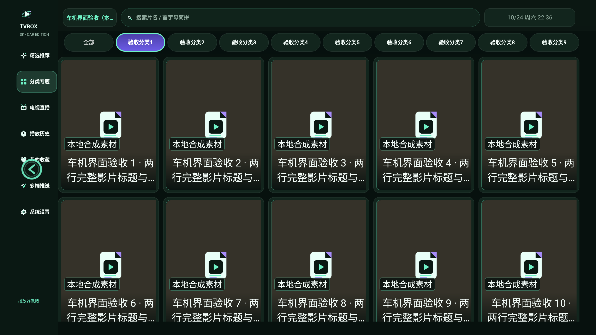
进入详情后 25 秒仍是纯黑，顶部没有标题栏，也没有返回按钮；用户会以为应用卡死。
把返回与标题移出 LoadSir 的替换区域，成为页面常驻顶栏；加载中显示“正在加载内容”，请求失败显示“暂时没有内容 / 重新加载 / 返回上一页”。
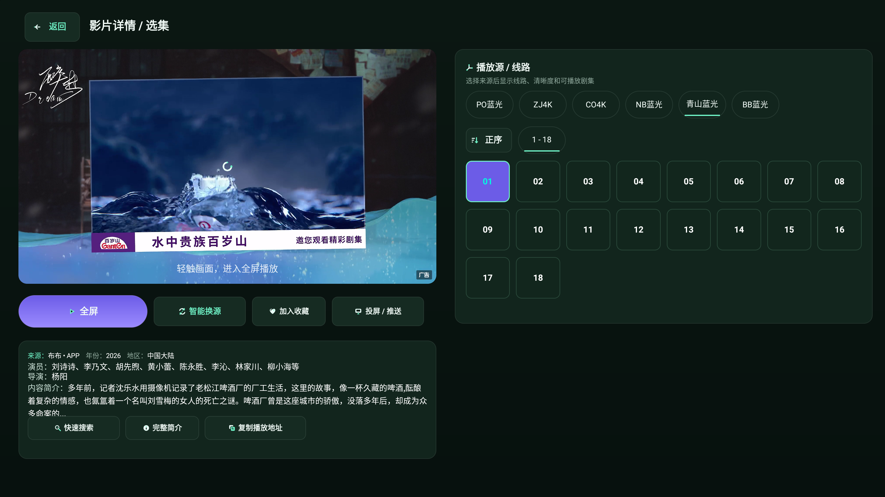
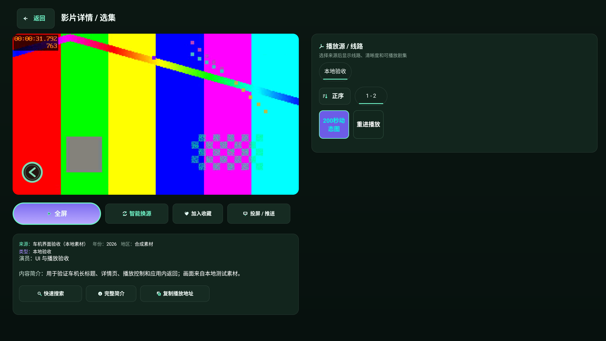
播放器弹窗只有 EXO，但同一页仍显示“IJK 解码方式 / IJK 缓存”，两个入口说的不是同一件事。
以播放器实际可选列表为准：只有列表包含 IJK 时才生成这两行，避免出现“有设置项、没播放器”的错觉。
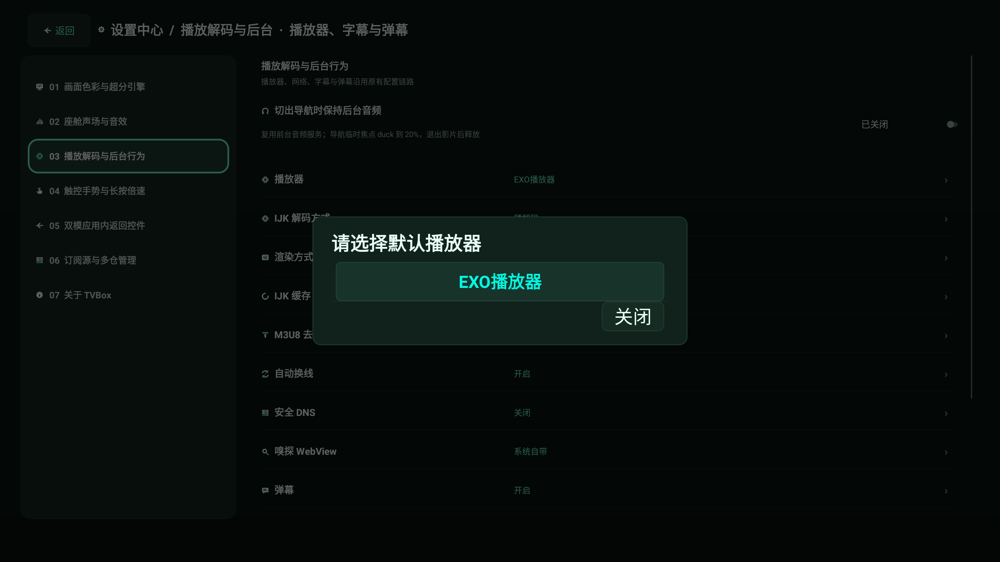
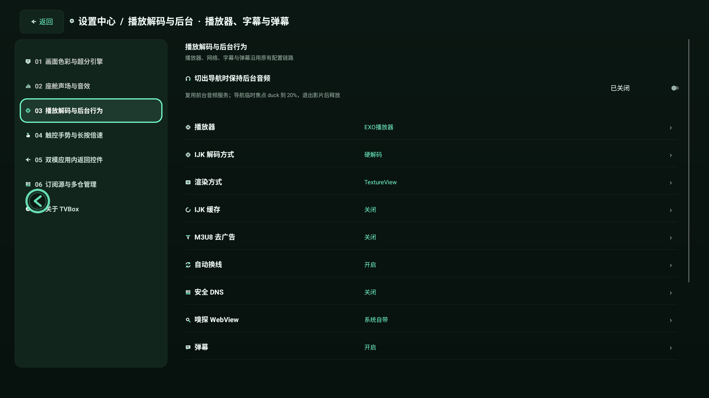
“最近搜索”下的空文案在顶部，放大镜和“输入片名”在面板底部，中间空了约 750px。
没有搜索历史时隐藏“最近搜索”空块，只保留面板中央的一组空态：图标、标题、说明。有历史时历史胶囊占据顶部，中央块仍作为下一步提示。
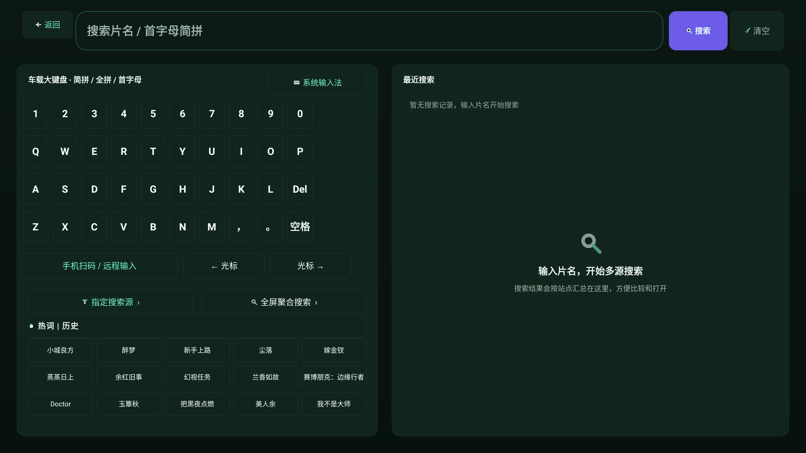
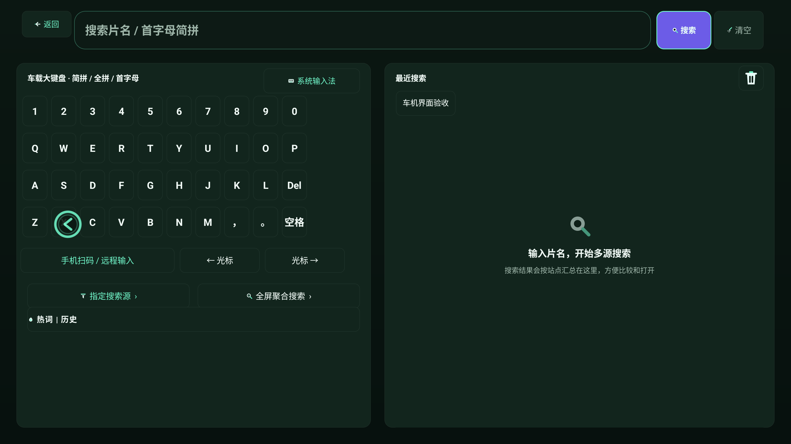
副信息（已完结 / 更新至第 18 集）与站点名同为 28px 灰绿，主次不分；第 4 行被面板底裁断且没有渐隐。
副信息改为更亮的 26px，站点名降为 20px 的“来源 · …”；列表底部加 120px 渐隐，滚动内容自然淡出而不是硬切。
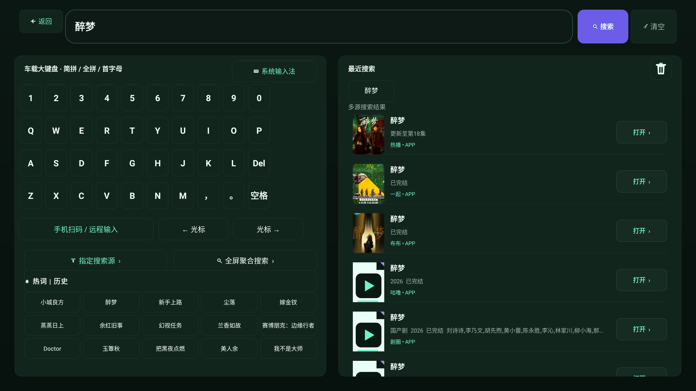
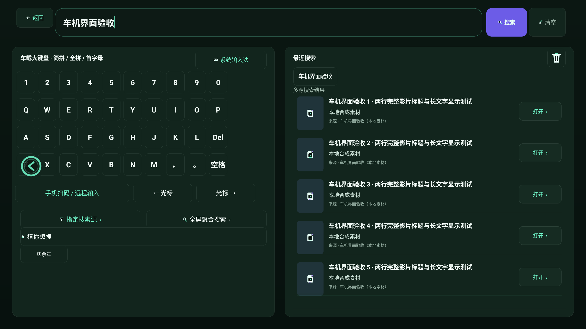
导航容器 x=24、图标 x=40..76，均在左侧安全区 78.7px 之外；带圆角或黑边的车机屏会先切到品牌标和图标。状态条底边正好压 1496。
导航容器移到 x=80，图标 x=96，文字 x=144；品牌标 x=96；状态条上移到 y=1428、底边留 12px。顶栏时钟与搜索页“清空”各向右缩 20px。
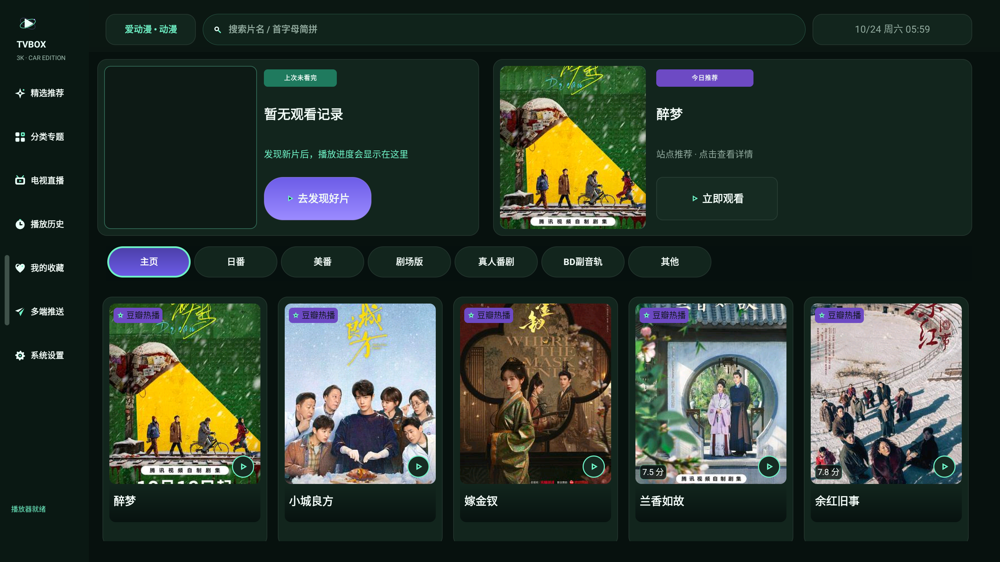
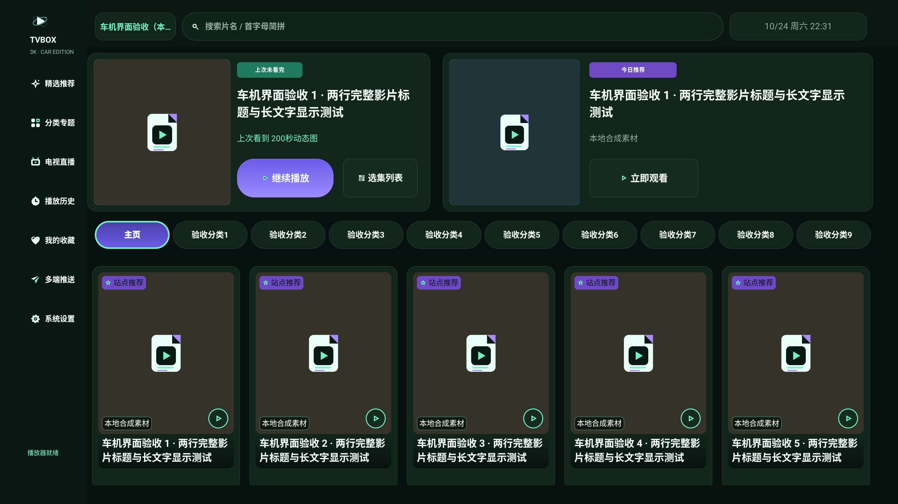
“收藏夹还是空的”时，右上“删除选中 / 清空收藏”仍是可点击外观，容易误触出空操作。
空态直接隐藏这两个按钮，只保留“去搜索影片”主操作；有收藏时再恢复正常工具条。
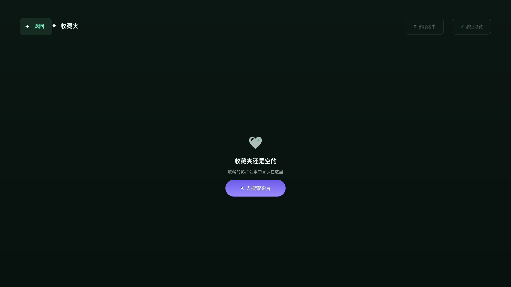
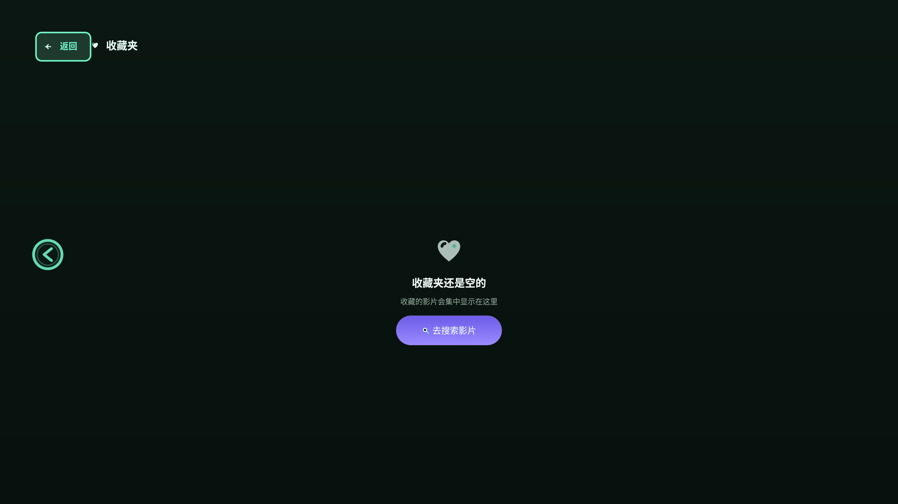
左卡顶部 y=227、右栏 eyebrow y=272，差 45px；左卡内容在 404 结束却延伸到 462，底部空 58px。
去掉右栏 paddingTop，左右都从 y=220 开始；二维码卡片改为 wrap_content 并用内边距收口，不再靠固定高度撑出空白。
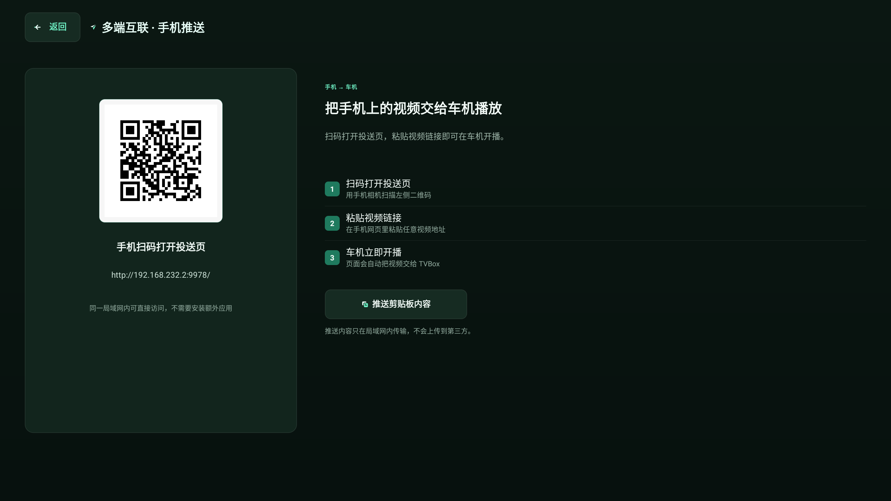
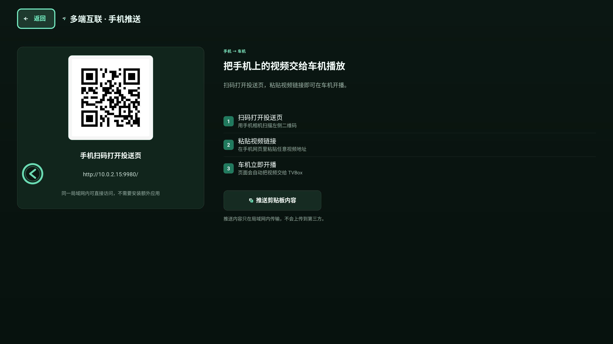
广告 banner 横在视频中部、加载 spinner 在画面中心、“轻触画面，进入全屏播放”落在底部，与右下“广告”角标只差 9px。
提示改为底部居中的小胶囊；播放器还没出画面时隐藏提示，只保留加载状态。提示不再和右下角标挤在同一角。
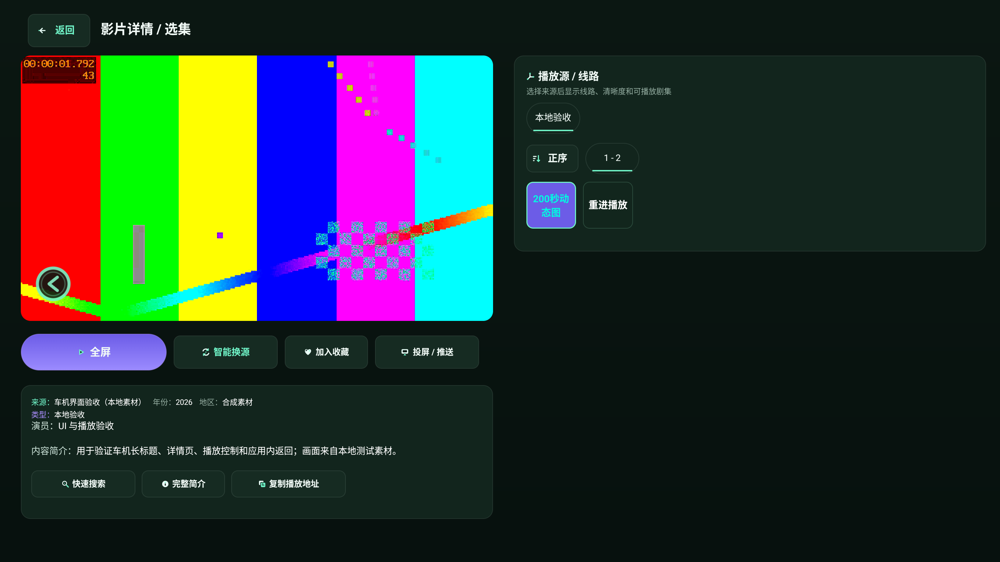
1e7a1ceb…6b022ae，没有混用旧证据。state-* 由实际 Android 状态组件强制展示，不是网络事件录像。pages 出现过一次同 SHA 的单点抖动；预热后重跑为 81/0，最终结果取该次。产品侧已加入“分类未就绪时记住跳转意图”的处理。